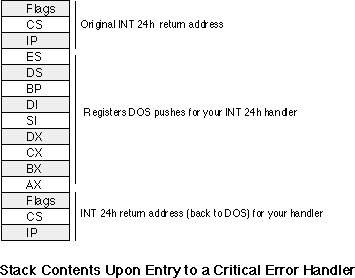

|
Table of Content | Chapter Nineteen
(Part 3) |
|
Table of Content | Chapter Nineteen
(Part 3) |
| CHAPTER NINETEEN: PROCESSES, COROUTINES AND CONCURRENCY (Part 2) |
| 19.1.2 -
Exception Handling in DOS: The Break Handler 19.1.3 - Exception Handling in DOS: The Critical Error Handler |
Whenever the users presses a ctrl-C or ctrl-Break key
MS-DOS may trap such a key sequence and execute an int 23h instruction.
MS-DOS provides a default break handler routine that terminates the program. However, a
well-written program generally replaces the default break handler with one of its own so
it can capture ctrl-C or ctrl-break key sequences and shut the program down in an orderly
fashion.
When DOS terminates a program due to a break interrupt, it flushes file buffers, closes all open files, releases memory belonging to the application, all the normal stuff it does on program termination. However, it does not restore any interrupt vectors (other than interrupt 23h and interrupt 24h). If your code has replaced any interrupt vectors, especially hardware interrupt vectors, then those vectors will still be pointing at your program's interrupt service routines after DOS terminates your program. This will probably crash the system when DOS loads a new program over the top of your code. Therefore, you should write a break handler so your application can shut itself down in an orderly fashion if the user presses ctrl-C or ctrl-break.
The easiest, and perhaps most universal, break handler
consists of a single instruction - iret. If you point the interrupt 23h
vector at an iret instruction, MS-DOS will simply ignore any ctrl-C or
ctrl-break keys you press. This is very useful for turning off the break handling during
critical sections of code that you do not want the user to interrupt.
On the other hand, simply turning off ctrl-C and ctrl-break handling throughout your entire program is not satisfactory either. If for some reason the user wants to abort your program, pressing ctrl-break or ctrl-C is what they will probably try to do this. If your program disallows this, the user may resort to something more drastic like ctrl-alt-delete to reset the machine. This will certainly mess up any open files and may cause other problems as well (of course, you don't have to worry about restoring any interrupt vectors!).
To patch in your own break handler is easy - just store the address of your break handler routine into the interrupt vector 23h. You don't even have to save the old value, DOS does this for you automatically (it stores the original vector at offset 0Eh in the PSP). Then, when the users presses a ctrl-C or ctrl-break key, MS-DOS transfers control to your break handler.
Perhaps the best response for a break handler is to set some flag to tell the application and break occurred, and then leave it up to the application to test this flag a reasonable points to determine if it should shut down. Of course, this does require that you test this flag at various points throughout your application, increasing the complexity of your code. Another alternative is to save the original int 23h vector and transfer control to DOS' break handler after you handle important operations yourself. You can also write a specialized break handler to return a DOS termination code that the parent process can read.
Of course, there is no reason you cannot change the interrupt 23h vector at various points throughout your program to handle changing requirements. At various points you can disable the break interrupt entirely, restore interrupt vectors at others, or prompt the user at still other points.
19.1.3 Exception Handling in DOS: The Critical Error Handler
DOS invokes the critical error handler by executing an int 24h instruction whenever some sort of I/O error occurs. The default handler prints the familiar message:
I/O Device Specific Error Message Abort, Retry, Ignore, Fail?
If the user presses an "A", this code immediately returns to DOS' COMMAND.COM program; it doesn't even close any open files. If the user presses an "R" to retry, MS-DOS will retry the I/O operation, though this usually results in another call to the critical error handler. The "I" option tells MS-DOS to ignore the error and return to the calling program as though nothing had happened. An "F" response instructs MS-DOS to return an error code to the calling program and let it handle the problem.
Of the above options, having the user press "A" is the most dangerous. This causes an immediate return to DOS and your code does not get the chance to clean up anything. For example, if you've patched some interrupt vectors, your program will not get the opportunity to restore them if the user selects the abort option. This may crash the system when MS-DOS loads the next program over the top of your interrupt service routine(s) in memory.
To intercept DOS critical errors, you will need to patch the interrupt 24h vector to point at your own interrupt service routine. Upon entry into your interrupt 24h service routine, the stack will contain the following data:

MS-DOS passes important information in several of the
registers to your critical error handler. By inspecting these values you can determine the
cause of the critical error and the device on which it occurred. The high order bit of the
ah register determines if the error occurred on a block structured device
(typically a disk or tape) or a character device. The other bits in ah have the following
meaning:
| Bit(s) | Description |
|---|---|
| 0 | 0=Read operation. 1=Write operation. |
| 1-2 | Indicates affected disk area. 00- MS-DOS area. 01- File allocation table (FAT). 10- Root directory. 11- Files area. |
| 3 | 0- Fail response not allowed. 1- Fail response is okay. |
| 4 | 0- Retry response not allowed. 1- Retry response is okay. |
| 5 | 0- Ignore response is not allowed. 1- Ignore response is okay. |
| 6 | Undefined |
| 7 | 0- Character device error. 1- Block structured device error. |
In addition to the bits in ah, for block structured devices
the al register contains the drive number where the error occurred (0=A, 1=B,
2=C, etc.). The value in the al register is undefined for character devices.
The lower half of the di register contains
additional information about the block device error (the upper byte of di is
undefined, you will need to mask out those bits before attempting to test this data).
| Error Code | Description |
|---|---|
| 0 | Write protection error. |
| 1 | Unknown drive. |
| 2 | Drive not ready. |
| 3 | Invalid command. |
| 4 | Data error (CRC error). |
| 5 | Length of request structure is incorrect. |
| 6 | Seek error on device. |
| 7 | Disk is not formatted for MS-DOS. |
| 8 | Sector not found. |
| 9 | Printer out of paper. |
| 0Ah | Write error. |
| 0Bh | Read error. |
| 0Ch | General failure. |
| 0Fh | Disk was changed at inappropriate time. |
Upon entry to your critical error handler, interrupts are turned off. Because this error occurs as a result of some MS-DOS call, MS-DOS is already entered and you will not be able to make any calls other than functions 1-0Ch and 59h (get extended error information).
Your critical error handler must preserve all registers
except al. The handler must return to DOS with an iret
instruction and al must contain one of the following codes:
| Code | Meaning |
|---|---|
| 0 | Ignore device error. |
| 1 | Retry I/O operation again. |
| 2 | Terminate process (abort). |
| 3 | Fail current system call. |
The following code provides a trivial example of a critical error handler. The main program attempts to send a character to the printer. If you do not connect a printer, or turn off the printer before running this program, it will generate the critical error.
; Sample INT 24h critical error handler.
;
; This code demonstrates a sample critical error handler.
; It patches into INT 24h and displays an appropriate error
; message and asks the user if they want to retry, abort, ignore,
; or fail (just like DOS).
.xlist
include stdlib.a
includelib stdlib.lib
.list
dseg segment para public 'data'
Value word 0
ErrCode word 0
dseg ends
cseg segment para public 'code'
assume cs:cseg, ds:dseg
; A replacement critical error handler. Note that this routine
; is even worse than DOS', but it demonstrates how to write
; such a routine. Note that we cannot call any Standard Library
; I/O routines in the critical error handler because they do not
; use DOS calls 1-0Ch, which are the only allowable DOS calls at
; this point.
CritErrMsg byte cr,lf
byte "DOS Critical Error!",cr,lf
byte "A)bort, R)etry, I)gnore, F)ail? $"
MyInt24 proc far
push dx
push ds
push ax
push cs
pop ds
Int24Lp: lea dx, CritErrMsg
mov ah, 9 ;DOS print string call.
int 21h
mov ah, 1 ;DOS read character call.
int 21h
and al, 5Fh ;Convert l.c. -> u.c.
cmp al, 'I' ;Ignore?
jne NotIgnore
pop ax
mov al, 0
jmp Quit24
NotIgnore: cmp al, 'r' ;Retry?
jne NotRetry
pop ax
mov al, 1
jmp Quit24
NotRetry: cmp al, 'A' ;Abort?
jne NotAbort
pop ax
mov al, 2
jmp Quit24
NotAbort: cmp al, 'F'
jne BadChar
pop ax
mov al, 3
Quit24: pop ds
pop dx
iret
BadChar: mov ah, 2
mov dl, 7 ;Bell character
jmp Int24Lp
MyInt24 endp
Main proc
mov ax, dseg
mov ds, ax
mov es, ax
meminit
mov ax, 0
mov es, ax
mov word ptr es:[24h*4], offset MyInt24
mov es:[24h*4 + 2], cs
mov ah, 5
mov dl, 'a'
int 21h
rcl Value, 1
and Value, 1
mov ErrCode, ax
printf
byte cr,lf,lf
byte "Print char returned with error status %d and "
byte "error code %d\n",0
dword Value, ErrCode
Quit: ExitPgm ;DOS macro to quit program.
Main endp
cseg ends
; Allocate a reasonable amount of space for the stack (8k).
; Note: if you use the pattern matching package you should set up a
; somewhat larger stack.
sseg segment para stack 'stack'
stk db 1024 dup ("stack ")
sseg ends
; zzzzzzseg must be the last segment that gets loaded into memory!
; This is where the heap begins.
zzzzzzseg segment para public 'zzzzzz'
LastBytes db 16 dup (?)
zzzzzzseg ends
end Main
|
Table of Content | Chapter Nineteen (Part 3) |
Chapter Nineteen: Processes,
Coroutines and Concurrency (Part 2)
29 SEP 1996